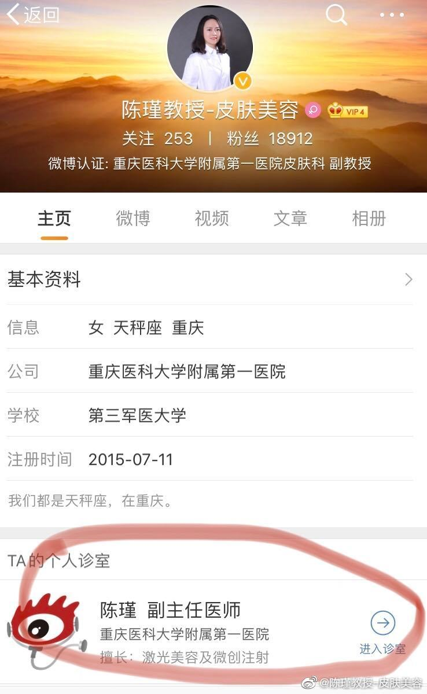

| 0 |
2019-12-12 10:09:17 |
1、如何向我咨询—可以在我的微博主页，进入爱问诊室和微博问答；也可以直接@陈瑾教授-皮肤美容，或者在我的微博评论下留言，我基本都会给大家解答；但是不回答私信提问，敬请谅解。\n2、扫描图三二维码关注我的w信公号“陈瑾教授皮肤美容”，定时更新，不定时福利。\n3、我的门诊时间：每周一下午、周三 |

|
| 1 |
2022-04-10 19:37:28 |
嘴角长水泡，是上火了吗[疑问]#青年美医进阶计划##微博健康公开课# http://t.cn/A66EGCbN |
NaN |
NaN |
| 2 |
2022-04-08 20:01:33 |
不起眼的痣，竟然和癌症有关？[疑问]#青年美医进阶计划##微博健康公开课# http://t.cn/A668AQWc |
NaN |
NaN |
| 3 |
2022-04-01 22:17:24 |
日常维护三步走，让“万斑之王”黄褐斑无可乘之机[酷] http://t.cn/A66WUBKD |
NaN |
NaN |
| 4 |
2022-04-01 21:15:26 |
白癜风在生活中需要注意些什么？[开学季]#青年美医进阶计划##微博健康公开课# http://t.cn/A66W2Y95 |
NaN |
NaN |
| 5 |
2022-03-25 20:04:46 |
斑没淡，反而还加重了，安全淡斑有黑科技[开学季] http://t.cn/A66ogzrq |
NaN |
NaN |
| 6 |
2022-03-24 21:26:12 |
跟着皮肤科医生走，熬夜肌也有救[挤眼][挤眼][挤眼]#青年美医进阶计划##微博健康公开课# http://t.cn/A66SDmP7 |
NaN |
NaN |
| 7 |
2022-03-22 20:06:21 |
可以暂停，观察 http://t.cn/A66iSjdW |
NaN |
NaN |
| 8 |
2022-03-20 11:15:24 |
医生要不要建议病人严格控制饮食？#青年美医进阶计划##微博健康公开课# http://t.cn/A66iI9Gq |
NaN |
NaN |
| 9 |
2022-03-15 14:55:05 |
拆快递变黄码？？？快递怎么收才安全[疑问]#青年美医进阶计划##微博健康公开课# http://t.cn/A66fSNU5 |
NaN |
NaN |
| 10 |
2022-03-09 21:13:34 |
烂脸姐妹看过来！听听陈教授怎么说[爱你]#青年美医进阶计划##微博健康公开课# http://t.cn/A66GTIM8 |
NaN |
NaN |
| 11 |
2022-03-05 20:53:41 |
感兴趣的朋友可以看看哦[挤眼] |
https://wx4.sinaimg.cn/orj1080/006apKcrgy1gzzatmjv0gj30u01hc0y7.jpg |
./imgs/006apKcrgy1gzzatmjv0gj30u01hc0y7.jpg |
| 12 |
2022-03-05 13:11:56 |
女孩子久坐屁股两边黑黑的是怎么回事呢？[疑问]#青年美医进阶计划##微博健康公开课# http://t.cn/A66yiT2H |
NaN |
NaN |
| 13 |
2022-02-28 21:06:20 |
哪类痘痘女孩需要查性激素？#青年美医进阶计划##微博健康公开课# http://t.cn/A66wv78l |
NaN |
NaN |
| 14 |
2022-02-24 21:13:42 |
玫瑰痤疮的注意事项有哪些[疑问]\n#青年美医进阶计划##微博健康公开课# http://t.cn/A66hpuL7 |
NaN |
NaN |
| 15 |
2022-02-22 21:05:20 |
女生头顶发缝变宽应该怎么办？[疑问]\n#青年美医进阶计划##微博健康公开课# http://t.cn/A66vOC1S |
NaN |
NaN |
| 16 |
2022-02-21 18:30:03 |
宝贝们，熬夜、日常护理不到位都会导致眼周出现干纹、黑眼圈，这些眼部问题看上去会让自己老好几个度。人老脸先衰、脸老眼先衰。所以眼部是最容易衰老的部位，所以千万要注意眼部护理！\nDr.chen再次告诉各位宝贝们一定要在日常保养中做好眼部抗衰的必要性，使用眼霜预防和修护是必要动作哦；这款 |
NaN |
NaN |
| 17 |
2022-02-16 21:38:30 |
面色暗沉怎么办呢？“包公”们快看过来[鼓掌]\n#青年美医进阶计划# http://t.cn/A6iBcbc9 |
NaN |
NaN |
| 18 |
2022-02-14 13:54:41 |
#熬夜脱发能自行恢复吗##90后年轻人已成植发主力军##健康美美过新年#\n脱脱脱脱脱发，什么时候是个头[允悲] http://t.cn/A6imhltu |
NaN |
NaN |
| 19 |
2022-02-11 19:00:05 |
【陈医生，您好，7号做了二氧化痰激光去除汗管瘤，只有2.3课，】结痂的地方继续抹红霉素眼膏，周围可以薄薄的抹一点艾洛松乳膏。 http://t.cn/A6iQ23eU |
NaN |
NaN |
| 20 |
2022-02-10 20:16:20 |
洗刷刷洗刷刷，真的好吗[哈哈]#青年美医进阶计划##健康过冬指南# http://t.cn/A6iTMQRw |
NaN |
NaN |
| 21 |
2022-02-10 19:00:05 |
【30岁 女 以前脸蛋会长痘痘 今年夏天突然脂溢性皮炎 同时开】口服多西环素一个月，然后可以考虑异维A酸口服，如果没有避孕的计划，物理治疗建议刷酸联合染料激光，后续光子，可以明显改善。 http://t.cn/A6iTtSrk |
NaN |
NaN |
| 22 |
2022-02-09 19:00:03 |
【陈医生您好，我一个月前咨询过您，关于我女儿的鲑鱼斑，准备去贵】要坚持每个月一次，效果才好 http://t.cn/A6ij96he |
NaN |
NaN |
| 23 |
2022-02-08 19:00:04 |
【48岁男性，慢性肾炎病史13年，糖尿病史4年，长期规律口服药】皮疹看起来是肥厚性的斑块，另外真菌镜检都是阴性，考虑是否有为湿疹样改变，最好到医院面诊，因为慢性肾炎加上糖尿病，会导致皮肤瘙痒，持续搔抓会导致皮疹增厚，所以需要面诊并进行药物治疗。 http://t.cn/A6iW8WoZ |
NaN |
NaN |
| 24 |
2022-02-07 19:00:04 |
【使用阿达帕林一段时间后犹豫涂抹过多皮肤发红怎么办？ 停药可以】是的，可以自我修复。 http://t.cn/A6iOvlZ2 |
NaN |
NaN |
| 25 |
2022-02-06 22:13:33 |
如何对付烦人的皱纹[疑问]快来看看陈医生怎么说[爱你]#青年美医进阶计划##健康过冬指南# http://t.cn/A6ipKJGy |
NaN |
NaN |
| 26 |
2022-02-06 19:00:04 |
【你好，医生。我之前有毛细血管扩张，导致的玫瑰痤疮，只是面部中】照片看起来，皮肤明显泛红，轻度水肿，没有看到明显的丘疹脓疱，面部皮肤非常敏感，现在暂时不做治疗，单纯使用护肤品来进行屏障修复，改善敏感，可以减少洗脸。 http://t.cn/A6ipq81q |
NaN |
NaN |
| 27 |
2022-02-05 19:00:05 |
【老师您好，我来咨询一下我的痘痘和便秘问题。本人长期便秘，情况】口服：多西环素和百鲜夏塔热，治痘也改善便秘，外用妍依净的果酸精华，阅肤的凝痘露 http://t.cn/A6iCTRuC |
NaN |
NaN |
| 28 |
2022-02-04 19:00:05 |
【陈医生，我脸上是黄褐斑，2月份在附一院做了一次激光，后面一直】门诊我看看，夏天可以做，但是必须严格做好防晒。 http://t.cn/A6i9zF6w |
NaN |
NaN |
| 29 |
2022-02-03 22:06:21 |
快来看看皮肤科医生都在做的医美项目有哪些[爱你] http://t.cn/A6iKvl1A |
NaN |
NaN |
| 30 |
2022-02-03 19:00:05 |
【19年12月底的开始做的激光治疗➕吃异维a酸，治疗开始的第二】需要继续吃异维A，点阵激光可以再来治疗 http://t.cn/A6iodLuR |
NaN |
NaN |
| 31 |
2022-02-02 19:00:06 |
【婴儿，50天。鲜红斑痣。陈教授，您看根据宝宝这个鲜红斑痣的位】鲜红斑痣，染料激光治疗越早越好！ http://t.cn/A6iSsdMM |
NaN |
NaN |
| 32 |
2022-02-01 22:03:37 |
陈瑾教授给您拜年啦！\n㊗您新春快乐！阖家团圆！涨薪不长痘，脱单不脱发！美丽永存，青春永驻！ |
https://wx1.sinaimg.cn/orj1080/006apKcrgy1gyyd0mvycxj30u0122n4g.jpg |
./imgs/006apKcrgy1gyyd0mvycxj30u0122n4g.jpg |
| 33 |
2022-02-01 19:00:05 |
【陈教授您好，我从2020年3月开始脸容易突然发红色或与皮肤颜】考虑玫瑰痤疮，需要调整口服药物和护肤品，另外最好屏障修复一下后再考虑光子，或者微针 http://t.cn/A6iS7EG6 |
NaN |
NaN |
| 34 |
2022-01-31 20:22:54 |
㊗大家虎年行大运，虎虎生威，如虎添翼！ |
https://wx3.sinaimg.cn/orj1080/006apKcrly1gyx4hdnoc4j31831nfx6p.jpg |
./imgs/006apKcrly1gyx4hdnoc4j31831nfx6p.jpg |
| 35 |
2022-01-31 19:00:05 |
【已经做过3次染料激光和1次点阵激光，异维a酸已经吃了半年了，】药物需要继续，染料激光还需要再做一下，后面可以考虑来治疗疤痕 http://t.cn/A6iXXrII |
NaN |
NaN |
| 36 |
2022-01-30 21:40:08 |
快来看看这些智商税，有你交过的吗[笑cry] http://t.cn/A6iJhh6L |
NaN |
NaN |
| 37 |
2022-01-30 19:00:04 |
【陈医生、皮肤一直很敏感，最近这一两天脸上突然长了很多痘痘，感】多西环素和复方甘草酸苷 http://t.cn/A6ixjqyI |
NaN |
NaN |
| 38 |
2022-01-29 19:00:05 |
【陈瑾医生您好：\n 本人胸处长了一块深色很痒并且会有黄】口服和外用的什么药？感觉病情在加重 http://t.cn/A6ifAktr |
NaN |
NaN |
| 39 |
2022-01-28 19:00:05 |
【陈主任你好，我是杨娟！一直找您看的玫瑰痤疮！上一次做的是燃料】下午早点来加号 http://t.cn/A6i5NhxJ |
NaN |
NaN |
| 40 |
2022-01-27 19:00:04 |
【陈教授您好，我是玫瑰痤疮患者，经过前期治疗医生建议继续维稳治】我觉得前期治疗方案是不错的，目前面部红血丝明显，黄褐斑，老年斑都有，但是其实也还好，不会太激惹色斑，即使有激惹也可以后面消退 http://t.cn/A6iyqhci |
NaN |
NaN |
| 41 |
2022-01-26 19:00:04 |
【陈医生你好，之前在门诊找您看痤疮，我叫刘丽，异维A过敏住院的】还是需要口服药，可以试试螺内酯 http://t.cn/A6i73GsC |
NaN |
NaN |
| 42 |
2022-01-25 19:00:05 |
【陈医生，您好，我目前是下巴附近很容易长痤疮，本来是想做激光来】当然可以，挂我的号来看看。 http://t.cn/A6JsTTos |
NaN |
NaN |
| 43 |
2022-01-24 21:40:05 |
前胸后背长痘痘怎么办？[哈哈] http://t.cn/A6JeJbEd |
NaN |
NaN |
| 44 |
2022-01-24 21:27:16 |
怎么趁过年期间偷偷变美？[太开心][太开心][太开心]\n明天中午12点DY直播间见~大家有任何想问的问题可以留言，明天在线为大家解答哦[爱你][爱你][爱你] |
https://wx2.sinaimg.cn/orj1080/006apKcrgy1gyp2xta1s6j31831qdjwo.jpg |
./imgs/006apKcrgy1gyp2xta1s6j31831qdjwo.jpg |
| 45 |
2022-01-24 19:00:04 |
【陈医生，宝宝四个月脸上长出来的胎记，去重庆西南医院确诊为太田】可能一两次激光治疗就干净了，但是这么小的年龄，太田痣还会继续生长，你做了也依然会生长，一般建议等生长稳定了再做，2-3次就基本干净了 http://t.cn/A6JgmwZV |
NaN |
NaN |
| 46 |
2022-01-23 19:00:04 |
【医生你好，我的脸上最近冒了很多痘痘。\n症状描述：主要集中在额】这是典型的痤疮，属于中度，照片上可见明显的粉刺，丘疹，炎症反应比较明显，需要进行口服药，外用药治疗。 http://t.cn/A6J13Nuk |
NaN |
NaN |
| 47 |
2022-01-22 19:00:04 |
【陈博士你好，我是一名22岁的女生，皮肤夏天油冬天干，因为在黑】你的皮肤可以看到粉刺、丘疹，似乎还有结节，痘印明显，痘坑看的不是很清晰，整个皮肤油，肤色不均匀，毛孔粗大，没有看到明显的红血丝和鳞屑，是个中重度痤疮，需要进行药物和物理治疗，可以口服多西环素，外用夫西地酸，配合刷酸治疗 |
NaN |
NaN |
| 48 |
2022-01-21 19:00:04 |
【陈医生您好，慕名已久，有几个问题想要咨询一下： \n目前的皮肤】你是一个重度痤疮，照片还不是很清楚，但是还是可以明确看到囊肿和结节，瘢痕，我建议你来我的门诊，系统从内到外进行治疗可以完全改善的，我这个月的门诊时间周一，周四下午，周三上午，提前一周在网上预约挂号，不用担心，我的治疗方 |
NaN |
NaN |
| 49 |
2022-01-20 22:20:20 |
油皮竟然也很好？\n放平心态，干皮油皮都各有优缺点[哈哈] http://t.cn/A6JTZbMs |
NaN |
NaN |
| 50 |
2022-01-20 19:00:05 |
【我之前检查皮炎，吃了百藓夏塔热片和盐酸多西环素肠溶胶囊和盐酸】可以外用贝复济，加强润肤，皮炎基本控制住了，可以停药观察。 http://t.cn/A6JYldHI |
NaN |
NaN |
| 51 |
2022-01-19 19:00:04 |
【陈博士您好，因为工作太忙一直挂不到您的号，之前在您这里诊断为】可以在外面买一点多西环素口服，或者罗红霉素，外用尤卓尔是可以的，暂时不用洗面奶，但是需要用水乳。 http://t.cn/A6JWYznb |
NaN |
NaN |
| 52 |
2022-01-18 19:00:05 |
【陈医生，我最近脸上冒了一颗特大的痘痘，快两周了，挤也挤不出来】过来找我加号，要治疗。 http://t.cn/A6J914Mo |
NaN |
NaN |
| 53 |
2022-01-17 19:00:05 |
【陈医生，接种了一针新冠疫苗，可以打瘦脸针吗】可以，不影响 http://t.cn/A6Ja1mwE |
NaN |
NaN |
| 54 |
2022-01-16 22:29:41 |
“猛药翻车”了怎么办？[哈哈]#青年美医进阶计划##健康过冬指南# http://t.cn/A6J6i7sa |
NaN |
NaN |
| 55 |
2022-01-16 19:00:04 |
【老师你好~我是17级临床的学生，上过您的课就来这里找您啦~想】 http://t.cn/A6J6P86o |
NaN |
NaN |
| 56 |
2022-01-15 19:00:05 |
【使用阿达帕林一段时间后犹豫涂抹过多皮肤发红怎么办？ 停药可以】是的，可以自我修复。 http://t.cn/A6JxJG8Z |
NaN |
NaN |
| 57 |
2022-01-14 19:00:04 |
【你好，医生。我之前有毛细血管扩张，导致的玫瑰痤疮，只是面部中】照片看起来，皮肤明显泛红，轻度水肿，没有看到明显的丘疹脓疱，面部皮肤非常敏感，现在暂时不做治疗，单纯使用护肤品来进行屏障修复，改善敏感，可以减少洗脸。 http://t.cn/A6Jfem7b |
NaN |
NaN |
| 58 |
2022-01-13 19:00:04 |
【脸颊皮肤较薄，混合干性，四川人长居北京，咨询2个问题：1.最】首先分析一下你的皮肤，从照片和描述来看，T区泛油，额部有粉刺，脸颊可见红斑，色斑，没有丘疹和脱屑，也未见明显的红血丝，下巴可见炎症性红斑和丘疹。你的皮肤综合评估:混合型皮肤，面颊敏感，T区油脂分泌旺盛，毛孔堵塞，整个面部均 |
NaN |
NaN |
| 59 |
2022-01-12 19:00:04 |
【陈医生您好，我一个月前咨询过您，关于我女儿的鲑鱼斑，准备去贵】要坚持每个月一次，效果才好 http://t.cn/A6J54rLn |
NaN |
NaN |
| 60 |
2022-01-11 19:00:04 |
【30岁 女 以前脸蛋会长痘痘 今年夏天突然脂溢性皮炎 同时开】口服多西环素一个月，然后可以考虑异维A酸口服，如果没有避孕的计划，物理治疗建议刷酸联合染料激光，后续光子，可以明显改善。 http://t.cn/A6JG0EEC |
NaN |
NaN |
| 61 |
2022-01-10 19:00:05 |
【陈教授您好，我从2020年3月开始脸容易突然发红色或与皮肤颜】考虑玫瑰痤疮，需要调整口服药物和护肤品，另外最好屏障修复一下后再考虑光子，或者微针 http://t.cn/A6JbxCfl |
NaN |
NaN |
| 62 |
2022-01-09 19:07:56 |
混干皮的白头粉刺怎么办？[疑问]\n#青年美医进阶计划##健康过冬指南# http://t.cn/A6J4Zvo3 |
NaN |
NaN |
| 63 |
2022-01-09 19:00:05 |
【婴儿，50天。鲜红斑痣。陈教授，您看根据宝宝这个鲜红斑痣的位】鲜红斑痣，染料激光治疗越早越好！ http://t.cn/A6J4zCjt |
NaN |
NaN |
| 64 |
2022-01-08 19:00:04 |
【48岁男性，慢性肾炎病史13年，糖尿病史4年，长期规律口服药】皮疹看起来是肥厚性的斑块，另外真菌镜检都是阴性，考虑是否有为湿疹样改变，最好到医院面诊，因为慢性肾炎加上糖尿病，会导致皮肤瘙痒，持续搔抓会导致皮疹增厚，所以需要面诊并进行药物治疗。 http://t.cn/A6JyBjot |
NaN |
NaN |
| 65 |
2022-01-07 19:00:05 |
【老师您好，我来咨询一下我的痘痘和便秘问题。本人长期便秘，情况】口服：多西环素和百鲜夏塔热，治痘也改善便秘，外用妍依净的果酸精华，阅肤的凝痘露 http://t.cn/A6JLOzvw |
NaN |
NaN |
| 66 |
2022-01-06 19:00:04 |
【陈医生，我脸上是黄褐斑，2月份在附一院做了一次激光，后面一直】门诊我看看，夏天可以做，但是必须严格做好防晒。 http://t.cn/A6J2fg14 |
NaN |
NaN |
| 67 |
2022-01-05 19:00:05 |
【小孩今天看《中国医生》纪录片中皮肤科医生相关科普文章，觉得自】要近期生长速度快，边缘不规则，颜色不均匀，才有可能是恶性，一般亚洲人黑色素瘤的机率小。 http://t.cn/A6JAxIMv |
NaN |
NaN |
| 68 |
2022-01-04 21:14:59 |
你会经常抠头皮吗？会不会扣出白色的小点点？\n赶紧住手！！！\n#青年美医进阶计划##健康过冬指南# http://t.cn/A6Jw80oE |
NaN |
NaN |
| 69 |
2022-01-04 19:00:05 |
【陈医生，您好，7号做了二氧化痰激光去除汗管瘤，只有2.3课，】结痂的地方继续抹红霉素眼膏，周围可以薄薄的抹一点艾洛松乳膏。 http://t.cn/A6JwlbaQ |
NaN |
NaN |
| 70 |
2022-01-03 19:00:05 |
【已经做过3次染料激光和1次点阵激光，异维a酸已经吃了半年了，】药物需要继续，染料激光还需要再做一下，后面可以考虑来治疗疤痕 http://t.cn/A6JZQcuo |
NaN |
NaN |
| 71 |
2022-01-02 19:00:05 |
【陈博士你好，我是一名22岁的女生，皮肤夏天油冬天干，因为在黑】你的皮肤可以看到粉刺、丘疹，似乎还有结节，痘印明显，痘坑看的不是很清晰，整个皮肤油，肤色不均匀，毛孔粗大，没有看到明显的红血丝和鳞屑，是个中重度痤疮，需要进行药物和物理治疗，可以口服多西环素，外用夫西地酸，配合刷酸治疗 |
NaN |
NaN |
| 72 |
2022-01-01 22:02:40 |
痣上的毛能拔吗[疑问]\n#我要上同城精选# http://t.cn/A6J7DXfi |
NaN |
NaN |
| 73 |
2022-01-01 19:00:06 |
【看看这是什么斑？以前用药水点过一次。】照片看起来是雀斑，至于有没有黄褐斑，或者是不是色沉，照片无法辨别，需要来门诊面诊，雀斑可以通过激光治疗，黄褐斑及色沉可以通过综合的方法减轻。 http://t.cn/A6J7mTbN |
NaN |
NaN |
| 74 |
2021-12-31 21:42:20 |
祝大家元旦快乐🎆🎆🎆\n新的一年更要美美哒[爱你][爱你][爱你] |
NaN |
NaN |
| 75 |
2021-12-31 19:00:05 |
【19年12月底的开始做的激光治疗➕吃异维a酸，治疗开始的第二】需要继续吃异维A，点阵激光可以再来治疗 http://t.cn/A6Jh6iGS |
NaN |
NaN |
| 76 |
2021-12-30 19:00:05 |
【陈医生、皮肤一直很敏感，最近这一两天脸上突然长了很多痘痘，感】多西环素和复方甘草酸苷 http://t.cn/A6JPfdHJ |
NaN |
NaN |
| 77 |
2021-12-29 19:00:04 |
【陈主任你好，我是杨娟！一直找您看的玫瑰痤疮！上一次做的是燃料】下午早点来加号 http://t.cn/A6JvG7pQ |
NaN |
NaN |
| 78 |
2021-12-28 19:00:05 |
【陈瑾医生您好：\n 本人胸处长了一块深色很痒并且会有黄】口服和外用的什么药？感觉病情在加重 http://t.cn/A6xsAJMu |
NaN |
NaN |
| 79 |
2021-12-28 18:00:02 |
什么是健康的皮肤？\n\n Dr.chen的回答是：皮肤屏障功能完好的，自我修复功能强大。然而基于种种肌肤压力，国人大多数皮肤都面临着严峻的“考验”，处于“亚健康”状态的比比皆是。\n \n 因此Dr.chen.推荐一下CR臻颜赋活修护系列，它能够满足大部分人以修护为主的护肤刚需。同时它也是咱们非常 |
NaN |
NaN |
| 80 |
2021-12-27 19:00:05 |
【医生你好，我的脸上最近冒了很多痘痘。\n症状描述：主要集中在额】这是典型的痤疮，属于中度，照片上可见明显的粉刺，丘疹，炎症反应比较明显，需要进行口服药，外用药治疗。 http://t.cn/A6xFPZOf |
NaN |
NaN |
| 81 |
2021-12-26 19:00:05 |
【陈医生，宝宝四个月脸上长出来的胎记，去重庆西南医院确诊为太田】可能一两次激光治疗就干净了，但是这么小的年龄，太田痣还会继续生长，你做了也依然会生长，一般建议等生长稳定了再做，2-3次就基本干净了 http://t.cn/A6xDFbUQ |
NaN |
NaN |
| 82 |
2021-12-25 21:18:30 |
@全体成员\n明天下午三点，欢迎大家来dou音向我提问哦[挤眼][挤眼][挤眼]\ndou音指路：皮肤科医生陈瑾 |
https://wx1.sinaimg.cn/orj1080/006apKcrgy1gxqdzslc3wj31831qdgre.jpg |
./imgs/006apKcrgy1gxqdzslc3wj31831qdgre.jpg |
| 83 |
2021-12-25 19:00:05 |
【陈医生您好，慕名已久，有几个问题想要咨询一下： \n目前的皮肤】你是一个重度痤疮，照片还不是很清楚，但是还是可以明确看到囊肿和结节，瘢痕，我建议你来我的门诊，系统从内到外进行治疗可以完全改善的，我这个月的门诊时间周一，周四下午，周三上午，提前一周在网上预约挂号，不用担心，我的治疗方 |
NaN |
NaN |
| 84 |
2021-12-24 19:00:06 |
【陈医生，您好，我目前是下巴附近很容易长痤疮，本来是想做激光来】当然可以，挂我的号来看看。 http://t.cn/A6xgePyb |
NaN |
NaN |
| 85 |
2021-12-23 20:35:24 |
猕猴桃女孩们看过来[挤眼][挤眼][挤眼]\n冬天也要悄悄脱毛，等夏天来了惊艳别人[哈哈]#青年美医进阶计划##健康过冬指南# http://t.cn/A6xdgHpn |
NaN |
NaN |
| 86 |
2021-12-23 19:00:05 |
【陈医生你好，之前在门诊找您看痤疮，我叫刘丽，异维A过敏住院的】还是需要口服药，可以试试螺内酯 http://t.cn/A6xd3KMG |
NaN |
NaN |
| 87 |
2021-12-22 19:00:06 |
【陈博士您好，因为工作太忙一直挂不到您的号，之前在您这里诊断为】可以在外面买一点多西环素口服，或者罗红霉素，外用尤卓尔是可以的，暂时不用洗面奶，但是需要用水乳。 http://t.cn/A6xrQQcE |
NaN |
NaN |
| 88 |
2021-12-21 20:21:05 |
陈医生祝大家冬至快乐噢[心][心][心]\n在寒冷的天气也要呵护好自己的肌肤噢[挤眼]\n#我要上同城精选# |
NaN |
NaN |
| 89 |
2021-12-21 19:00:05 |
【陈教授您好，我是玫瑰痤疮患者，经过前期治疗医生建议继续维稳治】我觉得前期治疗方案是不错的，目前面部红血丝明显，黄褐斑，老年斑都有，但是其实也还好，不会太激惹色斑，即使有激惹也可以后面消退 http://t.cn/A6xBjfuj |
NaN |
NaN |
| 90 |
2021-12-20 19:00:06 |
【我之前检查皮炎，吃了百藓夏塔热片和盐酸多西环素肠溶胶囊和盐酸】可以外用贝复济，加强润肤，皮炎基本控制住了，可以停药观察。 http://t.cn/A6x1O5W0 |
NaN |
NaN |
| 91 |
2021-12-19 19:00:05 |
【陈医生，我最近脸上冒了一颗特大的痘痘，快两周了，挤也挤不出来】过来找我加号，要治疗。 http://t.cn/A6x3pScv |
NaN |
NaN |
| 92 |
2021-12-19 14:31:33 |
#健康过冬指南##青年美医进阶计划# \n三招教你冬季修复敏感肌[挤眼]\n#我要上同城精选# http://t.cn/A6x3JRxN |
NaN |
NaN |
| 93 |
2021-12-18 19:00:05 |
【陈医生，接种了一针新冠疫苗，可以打瘦脸针吗】可以，不影响 http://t.cn/A6xu0bi6 |
NaN |
NaN |
| 94 |
2021-12-17 23:28:31 |
#健康过冬指南##青年美医进阶计划# \n冬日敏感肌应对策略：敏感肌为什么要抗炎？\n#我要上同城精选# http://t.cn/A6xmndgS |
NaN |
NaN |
| 95 |
2021-12-17 19:00:05 |
【老师你好~我是17级临床的学生，上过您的课就来这里找您啦~想】 http://t.cn/A6xmpZnP |
NaN |
NaN |
| 96 |
2021-12-16 18:54:51 |
#毛孔粗大该怎么拯救##青年美医进阶计划# 想要“无孔不入”，先来分清毛孔类型吧[哈哈] http://t.cn/A6xn69uK |
NaN |
NaN |
| 97 |
2021-12-13 21:30:48 |
问患者答：排队两小时，看病2分钟？[悲伤]\n看看三甲医院医生怎么说？ http://t.cn/A6x8qbwc |
NaN |
NaN |
| 98 |
2021-12-08 14:53:44 |
#安心变美计划# \n快来看看护肤品平替有没有欺骗你？[哈哈] http://t.cn/A6xlBuod |
NaN |
NaN |
| 99 |
2021-12-06 19:50:28 |
感兴趣的朋友可以联系海报中的医生噢[哈哈][哈哈] |
https://wx1.sinaimg.cn/orj1080/006apKcrgy1gx4cu6v9rzj30e50iz0zh.jpg |
./imgs/006apKcrgy1gx4cu6v9rzj30e50iz0zh.jpg |
| 100 |
2021-12-01 17:54:35 |
“瑾上添花”课堂开课啦，针对的是医生授课，但感兴趣的患者朋友也可以去围观哦[挤眼]\nhttp://t.cn/A6x9qd8U |
https://wx4.sinaimg.cn/orj1080/006apKcrgy1gwyheg6y5cj30kv113tcd.jpg |
./imgs/006apKcrgy1gwyheg6y5cj30kv113tcd.jpg |
| 101 |
2021-11-24 22:42:14 |
油痘肌祛痘？你需要看看这些tips[挤眼] http://t.cn/A6xi0wvK |
NaN |
NaN |
| 102 |
2021-11-21 21:05:01 |
面部下垂？？快来看看陈医生教你如何逆龄生长[挤眼] http://t.cn/A6xMNpZa |
NaN |
NaN |
| 103 |
2021-11-19 22:28:39 |
痘痘肌们看过来，这些平价又好用的药膏，你值得拥有！[挤眼] http://t.cn/A6xfnjUB |
NaN |
NaN |
| 104 |
2021-11-15 21:28:12 |
#毛孔粗大该怎么拯救# #青年美医进阶计划# 想要“无孔不入”，先来分清毛孔类型吧[哈哈] http://t.cn/A6x5Qogf |
NaN |
NaN |
| 105 |
2021-11-11 20:29:40 |
陈教授的私人护肤方法，你get了吗[挤眼] http://t.cn/A6x4uzFn |
NaN |
NaN |
| 106 |
2021-11-08 22:04:35 |
月亮不睡我不睡，谁是秃头小宝贝？\n小宝贝们看完陈医生的科普就要准备准备睡了喔[月亮] http://t.cn/A6xLQctT |
NaN |
NaN |
| 107 |
2021-11-07 11:33:34 |
原型VC还能用于美白吗？[挤眼] http://t.cn/A6x2GYOP |
NaN |
NaN |
| 108 |
2021-11-03 21:45:42 |
脸上有斑怎么办？还在遮遮掩掩？\n快来看看这个视频[羞嗒嗒] http://t.cn/A6xzp19f |
NaN |
NaN |
| 109 |
2021-11-02 21:40:18 |
看过来～谁是颈纹女孩👧？ http://t.cn/A6x7ClaP |
NaN |
NaN |
| 110 |
2021-10-31 21:29:11 |
如何拥有如鸡蛋般的光滑肌肤？[doge] http://t.cn/A6xPcOl8 |
NaN |
NaN |
| 111 |
2021-10-27 22:38:22 |
早C晚A是护肤黄金准则吗？[污] http://t.cn/A6MkyPIH |
NaN |
NaN |
| 112 |
2021-10-26 21:50:02 |
季节性脱发？\n我头顶一凉，新的脱发又来了[doge] http://t.cn/A6MD7ek4 |
NaN |
NaN |
| 113 |
2021-10-25 21:33:48 |
长痘痘留下的痘印，我该拿你怎么办？[悲伤] |
https://wx2.sinaimg.cn/orj1080/006apKcrgy1gvrvssl2lbj30u01hcx1s.jpg |
./imgs/006apKcrgy1gvrvssl2lbj30u01hcx1s.jpg |
| 114 |
2021-10-23 22:41:20 |
秋冬季节皮肤应激泛红应该怎么办？[羞嗒嗒] http://t.cn/A6MBoOCN |
NaN |
NaN |